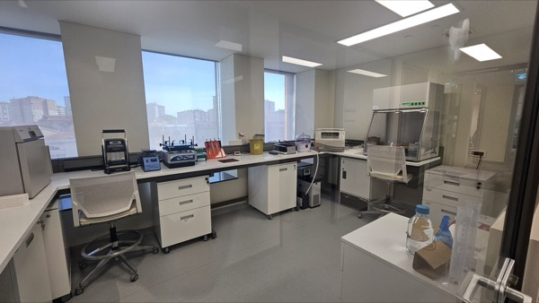

SOMATİK
Onkoloji ve moleküler patoloji
Tümör dizileme verilerinden varyant, füzyon ve biyobelirteç bulgularının değerlendirilmesi; uzman incelemesini destekleyen raporlama.
Yazılım
Veri işleme, yorumlama ve raporlamayı bir araya getiren yazılımlar geliştiriyoruz. Gennext, Geniva’nın klinik genomik ve longevity platformudur.
GENIVA’NIN YAZILIM ÜRÜNÜ
Analiz, kanıt inceleme ve raporlama için ortak bir çalışma alanı. Ürünü gennext.bio üzerinden inceleyin veya iş akışınızı bizimle konuşun.

GENNEXT CLINICAL
Klinik ve araştırma çalışmalarında dizileme verilerini işlemek, varyantları değerlendirmek ve bulguları raporlamaya hazırlamak için araçlar ve iş akışları.
SOMATİK
Tümör dizileme verilerinden varyant, füzyon ve biyobelirteç bulgularının değerlendirilmesi; uzman incelemesini destekleyen raporlama.
GERMLINE
Genetik bulgular, aile bilgisi ve fenotip bağlamında varyant filtreleme, önceliklendirme ve kanıt inceleme.
GENNEXT LONGEVITY
Genetik ve epigenetik değerlendirmeyi longevity hizmetleriyle birleştiriyoruz. Analiz ve rapor üretimi, sağlık profesyonellerini ve kurumları desteklemek üzere Gennext üzerinden otomatik yürütülür.
Multiomik yaklaşımımız genomik, transkriptomik, epigenetik, metabolomik ve lipidomik verileri birlikte ele alır. Genetik yatkınlık ve epigenetik değerlendirmeler, kişiselleştirilmiş sağlık ve sağlıklı yaşam hizmetlerini destekler.
Longevity raporları kişiselleştirilmiş sağlık danışmanlığını destekler; tanı testi değildir.

LABORATUVAR DESTEĞİ
Laboratuvar çalışmalarımız, Gennext’in analiz ve raporlama iş akışlarını tamamlar.
GENNEXT
Tanıtım videomuzu izleyin; kullanım eğitimleri ve analiz iş akışları için Gennext Community kanalını ziyaret edin.
Yazılım, altyapı veya eğitim ihtiyacınızı e-postayla paylaşın. Telefon numaranızı ekleyin, sizi arayalım.